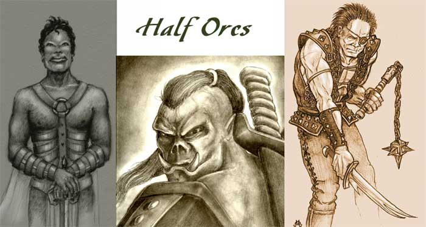

Half-Orc
Nascono dall'unione, raramente consensuale, tra uomini e gli orchetti (orcs) unendo le caratteristiche di entrambi. Hanno pelle scura che va sul verdastro e un corporatura possente, quando i tratti razziali degli orchetti predominano hanno anche naso schiacciato, peli e due denti che sporgono come piccole zanne dalle mascelle inferiori. Si trovano spesso a vagare solitari perché scacciati da entrambe le comunità e guardati con sospetto ovunque vadano. I mezzorchetti sono alti come gli umani anche se hanno una muscolatura ben più possente e una resistenza maggiore. La loro straordinaria capacità combattiva fa dei mezzorchetti straordinari guerrieri, ed ottime guardie del corpo. Dal momento che gli orchetti sono acerrimi nemici di nani, gnomi ed elfi, i mezzorchetti hanno notevoli difficoltà con i membri di quelle razze. Spesso anche gli umani tendono ad allontanarli soprattutto nelle zone dove la minaccia delle tribù di orchetti è più sentita, solo nell'Impero Scuro gli umani sono ormai abituati a trattare con costoro anche se a volte si manifestano forme di razzismo contro gli umanoidi.

Limiti
di classe per la razza:
Fighter 12° livello
Cleric
(Azatar)
Adoratore del Sangue 11° livello
Thief 10° livello
Possibilità di multi-classe:
Fighter/Thief, Fighter/Cleric
Allineamenti consentiti:
Qualsiasi non good
Categorie di età :
Base Age 12 + 1d4
Childhood
1-12 years
Adolescence
13-16 years
Adulthood
17-29 years
Middle Age*
30-39 years
Old Age**
40-59 years
Venerable Age***
60 + years
Maximum
Age
60 + 1d20 years
Dimensioni e peso :
Si considerano creature Medium.
Sono alti 160 (le femmine 140) + 2d20 cm. e
pesano 90 (le femmine 70) + 2d10 kg.
Punteggi di Abilità :
Bonus:
+ 1 forza, + 1
costituzione
Malus: – 1 intelligenza, – 2 carisma
Inoltre i limiti minimi e massimi sono i seguenti :
|
Abilità |
Punteggio Minimo
Razziale |
Punteggio Massimo
Razziale |
|
Forza |
9 |
18 |
|
Intelligenza |
3 |
17 |
|
Saggezza |
3 |
1 |
|
Costituzione |
13 |
19 |
|
Carisma |
3 |
12 |
|
Destrezza |
3 |
17 |
Half-orc
thieving ability adjustments :
Ability Modifier
Pick Pocket -5%
Open Lock +5%
Find/Rem.
Trap
+5%
Move Silently none
Hide in Shadows none
Detect Noise +5%
Climb Wall +5%
Read Languages -10%
Caratteristiche speciali :
La percentuale prima della caratteristica indica la possibilità che il personaggio abbia quel tratto bestiale.
Infravisione: I mezzi orchetti hanno un'infravisione di 18 metri.
(50%)
Violenza Intimidatoria: Durante un combattimento il mezzorchetto può
provare ad intimidire il proprio avversario (che sia in melee) riducendo la sua
capacità combattiva. In particolare lo combatterà con incredibile violenza
emettendo urla bestiali. Effettuare questo tentativo non conta azione ma occorre
che l'half-orc compia nel round una qualsiasi azione di combattimento (anche la
parata è considerata valida), inoltre costui utilizza per lo sforzo un punto
fatica supplementare. L'avversario a cui è diretta l'intimidazione dovrà
quindi superare una prova sul suo punteggio di morale o subire una penalità di
-1 ai suoi tiri per colpire rivolti contro l'half orc per il resto del
combattimento. Creature di dadi vita maggiori rispetto al mezzorchetto e
creature fearless sono immuni a questa forma di intimidazione.
(33%)
Furia Bestiale: Ogni volta che, durante il combattimento, l'half-orc effettua un colpo critico
con un attacco in corpo a corpo, lo stesso viene preso da una furia
cieca entrando, a partire dal round successivo, nello stato di furia previsto
dal talento dei berserker "furia di combattimento"
(vedi). Ciò senza ottenere, però, il bonus
costante alla Tach0 ed ai danni previsti dal talento stesso (ossia quello che si
applica indipendentemente dallo stato d'ira), a meno che, ovviamente, costui non
appartenga alla classe dei berserker. Se l'half-orc non appartiene alla classe
dei berserker lo stato d'ira terminerà in ogni caso ed automaticamente alla fine
del terzo rounds di furia (ciò indipendentemente dalla fine del combattimento
contro i propri avversari o dall'eventuale prova di saggezza effettuata per
tranquillizzarsi che al terzo round sarà considerata automaticamente superata).
Se, invece, l'half-orc appartiene alla classe dei berserker saranno applicate in
tutto le normali regole previste dal suddetto talento, alle quali, però, si
aggiungerà il predetto obbligatorio ingresso nello stato d'ira ogni volta in cui
il combattente effettua un colpo critico con un attacco in corpo a corpo (in
questo caso, quindi, il berserker half-orc non potrà provare a resistere
all'ingresso nello stato d'ira anche se precedentemente aveva superato la prova
di saggezza evitando di infuriarsi).
(33%)
Sensibilità alla Luce: Quando si
trova alla luce del sole (o quella di un continual light, o altra fonte in grado
di illuminare in un raggio di 12 metri) riceve -1 ai tiri per
colpire.
Gli
Half Orc devono raggiungere un ammontare di punti esperienza pari al 118%
di quelli che dovrebbero normalmente raggiungere per la classe scelta..